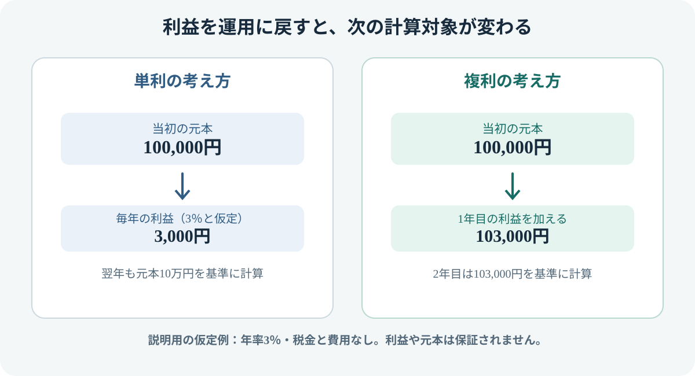

複利とは？投資でお金が増える仕組みとシミュレーション
複利（ふくり）は、運用で得た利益を元本に加え、その後は「元本＋それまでの利益」をもとに運用する考え方です。運用期間が長いほど複利の効果が表れやすくなる一方、実際の投資では利益が毎年一定になるとは限らず、元本割れすることもあります。仕組みと限界をセットで理解しましょう。
- 単利は当初の元本をもとに利息などを計算し、複利は元本とそれまでの利益を合わせた金額をもとに運用する考え方。
- 利益を再投資できれば、利益がさらに利益を生む可能性がある。
- 複利は利益を保証する仕組みではない。運用成績がマイナスなら資産が減ることもある。
- 試算結果は利回り・期間・費用・税金などの前提で変わり、将来の成果を予測・保証するものではない。
1. 複利とは？単利との違い
単利は、当初の元本を基準に利息などを計算する考え方です。複利は、得られた利益を元本に加えて運用を続ける考え方です。銀行預金の利息や投資商品の運用成果など、具体的な仕組みは商品によって異なりますが、「利益を再び運用に回すことで、その後の運用対象額が大きくなり得る」という点が複利の基本です。
| 比較 | 単利 | 複利 |
|---|---|---|
| 計算の基準 | 当初の元本 | 元本＋再投資された利益 |
| 利益の扱い | 利益を元本に加えない前提 | 利益を運用に回す前提 |
| 期間が長くなると | 同じ利率なら利益額は一定ペースで増える | 同じ利率で利益を再投資できれば、増加額が大きくなり得る |
投資信託などでは、利益が必ず毎年発生するわけではありません。価格が下がる年もあり、分配金を受け取る商品では再投資するかどうかによって結果が変わります。「複利の商品」という名前が付いていれば利益が保証される、という意味ではありません。
2. 複利で増える仕組みを図で見る
たとえば、元本10万円を年率3％で運用できたと仮定します。1年後の利益は3,000円です。利益を引き出さずに運用を続けると、2年目は10万3,000円をもとに計算するため、同じ3％なら2年目の利益は3,090円になります。

説明用の仮定例：元本10万円、年率3％、税金・費用なし。実際の投資成果を示すものではありません。
この例では、単利の2年目も利益は3,000円ですが、複利では3,090円になります。差は小さく見えても、利益を再投資しながら期間を重ねると差が広がる場合があります。ただし、実際の投資では毎年のリターンは一定ではなく、複利計算どおりに増えるとは限りません。
この式は、利率が一定で、利益を再投資し、追加投資や引き出しがない場合の基本形です。積立投資では毎回の購入時期が異なるため、各積立額が運用される期間も異なります。
3. 毎月積み立てた場合のシミュレーション
毎月1万円を積み立てる例で、運用期間と仮定利回りの影響を考えてみます。次の数字は、毎月末に積み立て、年率を月率に換算して複利運用できたと仮定した概算です。利回りは保証されず、税金・費用・インフレを考慮していません。
| 期間 | 積立元本の合計 | 年率3％と仮定した場合 |
|---|---|---|
| 10年 | 120万円 | 約140万円 |
| 20年 | 240万円 | 約328万円 |
| 30年 | 360万円 | 約583万円 |
この例では、期間が長くなるにつれて、積立元本と試算額の差が大きくなります。ただし、差額すべてを「複利だけの効果」と単純に切り分けることはできません。実際の資産額は、購入時期ごとの値動き、利回りの変動、費用、税金、分配金の扱いなどによって変わります。
4. 複利を考えるときの注意点
利回りは一定ではない
シミュレーションは、前提を固定して仕組みを理解するためのものです。株式や投資信託の価格は上がることも下がることもあり、実際のリターンは年ごとに変動します。一定利回りの試算を、将来の資産額の予測として扱わないようにしましょう。
費用や税金は運用成果に影響する
投資信託では信託報酬などの費用がかかる場合があり、課税口座では利益や分配金に税金がかかることがあります。費用や税金が差し引かれると、再投資に回せる金額が小さくなります。
分配金を受け取るか再投資するかで違いが出る
投資信託などの分配金を受け取ると、そのお金は自動的には運用に回りません。再投資する場合も、商品や口座、制度上の条件を確認する必要があります。また、分配金が支払われると、その分だけ基準価額が下がる要因になることがあり、分配金の多さだけで運用成果を判断するのは適切ではありません。
インフレでお金の購買力が変わる
名目上の金額が増えていても、物価が上がれば同じ金額で買えるものは少なくなる可能性があります。将来必要なお金を考える際は、資産額だけでなく、物価の変化も意識しましょう。
5. 長期投資で意識したいこと
- 無理のない金額にする：生活費や近く使う予定のお金を確保し、値下がりしても生活に支障が出にくい金額を検討する。
- 仕組みとリスクを理解する：投資対象、値動き、費用、換金条件を確認してから商品を選ぶ。
- 時間だけに期待しない：長期保有でも元本割れする可能性はあり、期間を延ばせば必ず利益が出るわけではない。
- 定期的に状況を確認する：目的や家計、リスク許容度が変わった場合は、投資額や資産配分を見直す。
6. よくある質問
複利なら必ずお金は増えますか？
いいえ。複利は利益を再投資する仕組みを表す言葉で、利益や元本を保証するものではありません。投資商品は値下がりすることがあり、損失が続けば資産額が減る可能性があります。
複利の効果を得るには、毎月積み立てる必要がありますか？
毎月の積立は複利を活用する一つの方法ですが、必須ではありません。まとまった資金を運用する場合でも、利益を再投資すれば複利の考え方が関係します。いずれの場合も、投資対象やリスク、費用を確認することが大切です。
利回りが高い商品ほどよいですか？
利回りの数字だけでは判断できません。高いリターンが示されていても、対象期間やリスク、費用、分配金の扱いが異なる可能性があります。過去の実績は将来の成果を保証しません。
7. 公式情報・参考資料
- 金融庁「NISAを知る」 — NISA制度の公式情報。制度を利用する場合は最新の条件を確認してください。
- J-FLEC（金融経済教育推進機構） — 資産形成や金融リテラシーに関する学習情報。
本記事の計算例は、複利の仕組みを説明するための仮定に基づく概算です。特定の金融商品を推奨するものではなく、投資判断を個別に助言するものでもありません。投資には元本割れのリスクがあります。